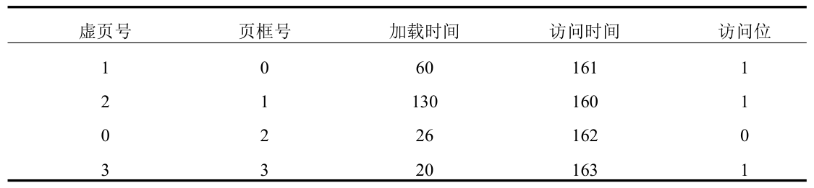
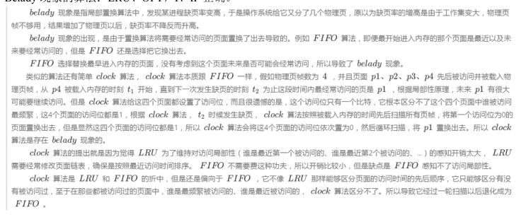

第 61 题
系统采用请求分页式存储管理方式，页框的分配和置换采用固定分配局部置换。操作系统给进程A 分配的页框数为4，初始为空。接下来一段时间中进程陆续访问了如下页面：1、8、1、7、8、2、 7、2、1、8、3、8、2、1、3、1、7、1、3、7。若采用LRU 算法置换页面，则发生缺页中断的次数是 （）。
A． 3 B． 5 C． 6 D． 8 答案与解析 答案：C
操作系统为进程A 分配了4 个页框，当第一次访问页面时会发生缺页中断，所以当第一次访问页面1、8、7、2都会发生缺页中断。采用的是LRU最近最久未使用置换算法访问1(缺页)、8(缺页)、7(缺页)、8、2(缺页)、7、2、1、8、3(缺页)、8、2、1、3、1、7(缺页)、1、3、7。发生缺页中断的次数为6 次，选C。
教材第 162 页 第 62 题
系统按字节编址，采用请求分页存储系统，页框的分配和置换采用固定分配局部置换方式。某一时刻，进程A 的页框全部空闲，在接下来的一段时间中依次访问了如下页面：1，3，2，1，1，3，5， 1，3，2，1，5。若使用LRU 算法选择置换页，请问进程A 分配页框数为3 和4 时的缺页率各是多少 （）。
A． 20%，33% B． 50%，33% C． 25%，66% D． 50%，80% 答案与解析 答案：B
当为进程A 分配页框数为3 时，访问页面顺序1(缺页)，3(缺页)，2(缺页)，1， 1，3，5(缺页)，1，3，2(缺页)，1，5(缺页)。缺页率=6/12=50%。当为进程A 分配页框数为4 时，访问页面顺序1(缺页)，3(缺页)，2(缺页)，1，1，3，5(缺页)，1， 3，2，1，5。缺页率=4/12=33%，选B。
教材第 162 页 第 63 题
给一个进程分配4 个页框，其页表如下。在时间164 产生虚页号4 缺页。分别按照FIFO、LRU、 CLOCK 策略，被置换出的页框号是（ ）。

A． 3、1、1 B． 3、2、0 C． 3、2、3 D． 3、1、2 答案与解析 答案：D
根据FIFO策略，最先置换出去的页面是最早进入的，最早进入的页框号是3，所以按照FIFO策略，会将页框号为3 的页面置换出去。根据LRU策略，最先置换出去的是最近最久未使用的页面，由引用时间可知，最近最久未使用的页框为1 号页框，所以会将1 号页框置换出去。根据CLOCK 策略，会将引用位为0 的页面置换出去，所以会将2 号页框置换出去。选项D 正确。
教材第 162 页 第 64 题
以下对置换算法和抖动的描述中正确的有（ ）。
A． I、Ⅲ B． Ⅰ、IV C． I、Ⅱ、Ⅲ D． Ⅱ、IV 答案与解析 答案：C
会发生Belady现象的算法：FIFO、CLOCK以及改进的CLOCK，不会发生Belady 现象的算法：LRU、OPT，I、Ⅱ正确。如果进程的工作集都被调入了虚拟内存中，还是会发生缺页中断，且不会保持在较低水平。而如果进程的工作集都被调入物理内存中，进程的缺页率可以保持一个较低水平，Ⅲ对，IV 错。答案是C， I、II、III 正确，

教材第 163 页 第 65 题
进程的页面访问序列为{1, 1, 2, 3, 2, 4, 1, 4, 2, 5}。系统采用工作集策略动态调整驻留集大小，设定工作集滑窗大小Δ = 5。若当前刚刚访问完序列中的最后一个页面5，则此时该进程的工作集WS 以及在整个访问序列执行过程中最多曾有多少个页面同时驻留在内存中？（ ）。
A． {2, 4, 5}，4 个 B． {1, 2, 4, 5}，4 个 C． {1, 2, 4, 5}，5 个 D． {2, 4, 5}，5 个 答案与解析 答案：B
计算当前工作集WS：刚刚访问完最后的页面5，此时往前数5个访问记录 （含页面5本身），涵盖的访问子序列为最后5位：{4, 1, 4, 2, 5}。去除重复项后，去重集合为{1, 2, 4, 5}。所以此时工作集WS = {1, 2, 4, 5}。寻找历史最大驻留页面数：整个执行过程中，每个时刻的工作集就是当时的驻留集。我们滑动窗口看看哪个阶段去重后的不同页面最多： ￮访问到第6个元素4时，窗口为{1, 2, 3, 2, 4}→页面有{1, 2, 3, 4}（4 个）。 ￮ 访问到第7个元素1时，窗口为{2, 3, 2, 4, 1}→页面有{1, 2, 3, 4}（4 个）。纵观全局，没有任何一个滑窗片段能够凑齐5个完全不同的页面（因为数字总共才活跃那么几个）。因此历史最多同时驻留页面的数量为4个。
教材第 163 页 第 66 题
在页式虚拟管理系统中，假定驻留集为m 个页帧（初始所有页帧均为空），在长为p 的引用串中具有n 个不同页号(n>m)，对于FIFO、LRU两种页面替换算法，其缺页中断的次数的范围分别为 （）。
A． [m，p]和[n，p] B． [m，n]和[n，p] C． [n，p]和[m，n] D． [n，p] 和[n，p] 答案与解析 答案：D
缺页中断的原因是当前访问的页不在主存，需将该页调入主存。此时不管主存是否已满(已满则先调出一页)，都要发生一次缺页中断。即无论怎么安排，n 个不同的页号在首次进入主存时必须要发生一次缺页中断，总共发生n 次，这就是缺页中断的下限。虽然不同页号数为n，小于或等于总长度p(访问串可能会有一些页重复出现)，但驻留集m<n，所以可能会有某些页进入主存后又被调出主存，当再次访问时又发生一次缺页中断的现象，即有些页可能会出现多次缺页中断。极端情况是每访问一个页号时，该页都不在主存，这样共发生了p 次故障。所以无论对于FIFO或者LRU 替换算法，其缺页中断的上限均为p，下限均为n。
教材第 163 页 第 67 题
内存映射文件（Memory-Mapped File）是一种允许进程将文件内容直接映射到其虚拟地址空间的技术。下列关于内存映射文件的叙述中，错误的是（）。
A． 进程访问内存映射文件区域就像访问普通内存一样，无需显式的read()或write()系统调用 B． 不同进程可以将同一个文件映射到各自的虚拟地址空间中，实现对该文件内容的高效共享 C． 当一个进程修改其内存映射文件区域时，所做的修改会立即写回磁盘上的原始文件 D． 内存映射文件区域的读写操作可能会引发缺页中断，操作系统会负责将文件内容从磁盘按需调入物理内存 答案与解析 答案：C
A 正确，一旦文件被映射到进程的虚拟地址空间，进程就可以像访问普通内存数组一样，通过指针和内存访问指令（如MOV）来直接读写文件内容，而不需要调用传统的read()或write()系统调用。 B 正确，内存映射文件是实现进程间共享数据（特别是大文件）的一种高效方式。多个进程可以将同一个文件映射到它们各自的地址空间。如果映射是共享的，那么一个进程对映射区域的修改对其他共享该映射的进程是可见的（取决于映射类型和同步机制）。 C 错误，当进程退出或关闭文件映射时，所有的被改动页面才会被写回磁盘文件，并非修改后立即写回。 D 正确，内存映射文件利用了操作系统的请求分页机制。当进程首次访问映射区域中的某个页面，而该页面尚未加载到物理内存时，会发生缺页中断。操作系统会响应该中断，从磁盘文件中读取相应的页面内容到物理内存，并更新页表，然后进程才能继续执行。这种按需调入的方式使得可以映射远大于物理内存的文件。
教材第 163 页 第 68 题
以下关于内存映射文件的说法中错误的是（ ）。
A． 一般的I/O 操作中，从磁盘调入的文件会先写入内核页高速缓存，然后再从页高速缓存复制到用户进程缓冲区。而内存映射文件避免这次从内核空间到用户空间的额外数据复制，从而提高I/O 效率 B． 进程通过系统调用将文件映射到其虚拟内存空间的一部分，并将这一文件全部调入到物理内存 C． 内存映射文件实现了从进程对应磁盘文件到其虚拟内存空间中某部分的映射 D． 内存映射文件能为不同进程提供一个高带宽的通信通道 答案与解析 答案：B
B 错误，内存映射文件利用了操作系统的请求调页（Demand Paging）机制。当文件被映射时，并不会立即将其全部内容调入物理内存。只有当进程实际访问到映射区域中的某个特定页面，而该页面尚未在物理内存中时，才会触发缺页中断，操作系统再负责将对应的文件部分从磁盘调入物理内存。这种按需调页的方式使得可以映射远大于可用物理内存的文件。 A 正确，传统的I/O 操作（如read()）会将文件数据从磁盘读入内核的页高速缓存，然后再从页高速缓存复制到用户进程的缓冲区。内存映射文件通过将文件内容直接映射到进程的虚拟地址空间，可以避免这次从内核空间到用户空间的额外数据复制，从而提高I/O 效率。 C 正确，这是内存映射文件的核心概念。通过系统调用（如mmap()），文件在磁盘上的内容被映射到进程虚拟地址空间的一个连续区域。之后，进程就可以像访问内存一样访问文件内容。 D 正确，当多个进程将同一个文件以共享模式映射到它们各自的虚拟地址空间时，它们实际上共享了物理内存中该文件的相同副本（通过页高速缓存）。一个进程对映射区域的修改可以被其他共享该映射的进程看到（取决于映射类型和同步）。这种直接的内存共享避免了传统IPC 机制（如管道、消息队列）中数据需要通过内核进行多次复制的开销，因此可以提供一种高带宽的进程间通信方式，特别适合大量数据的共享。
教材第 163 页 第 69 题
下列选项中，不会影响系统缺页率的是（ ）。
A． IV B． III C． I D． V 答案与解析 答案：A
只有IV 不会影响缺页率。 I.页置换算法会影响缺页率，例如，LRU算法的缺页率通常要比FIFO算法的缺页率低。 II.工作集的大小决定了分配给进程的物理块数，分配给进程的物理块数越多，缺页率就越低。 III.进程的数量越多，对内存资源的竞争越激烈，每个进程被分配的物理块数越少，缺页率也就越高。 IV.页缓冲队列是将被淘汰的页面缓存下来，暂时不写回磁盘，缺页是指访问的页未分配页框，在页缓冲或在磁盘，都叫缺页。所以队列长度会影响页面置换的速度，但不会影响缺页率。 V.编写程序的局部化程度越高，执行时的缺页率就越低。若存储采用的是按行存储，则访问时就要尽量采用相同的访问方式，避免按列访问造成缺页率过高的现象。
教材第 164 页 第 70 题
为判断一个请求分页存储管理系统的运行性能，对系统中各设备的利用率进行测试，结果如下CPU利用率为15%，磁盘交换区利用率为99.1%，其他I/O设备利用率为6%。以下措施中可以改进CPU利用率的是（）。
A． Ⅰ、Ⅱ B． Ⅰ、Ⅲ C． Ⅱ、Ⅲ、Ⅴ、Ⅵ D． Ⅰ、Ⅱ、Ⅲ、Ⅳ 答案与解析 答案：A
由题目可以得出，大部分时间消耗在磁盘交换区，也就是说，物理内存太小，导致数据需要频繁的换进换出，因此使用容量更大的内存可以改进CPU 利用率。此外CPU 和I/O 利用率都很低，说明CPU 一次读取了太多的程序放入内存中，因此减少系统多道程序度数，使每个进程可以分配到更多页框，也可以改进CPU 利用率。选Ⅰ，Ⅱ。
教材第 164 页 第 71 题
在段式存储管理中，某进程的段表项结构包括：段号、段长、基址、有效位（存在位）、访问权限位。当CPU 执行一条指令，企图去写一个逻辑地址为(段号=3, 段内偏移=5000) 的内存单元时，硬件地址变换机构会进行一系列检查。关于检查顺序与异常触发的叙述，正确的是（）。
A． 先检查有效位，若该段不在内存中则抛出“缺段异常”；再检查段内偏移是否大于段长，若大于则抛出“越界异常” B． 先检查段内偏移是否大于段长，若大于则直接抛出“越界异常”；若未越界，再检查有效位，若有效位为0 则抛出“缺段异常” C． 先检查访问权限位是否允许写，若不允许则抛出“保护异常”；然后再依次检查段长和有效位 D． 越界检查和缺段检查由硬件并行执行，若同时发生，优先处理缺段异常，因为要从外存调入段 答案与解析 答案：B
地址变换机构在拿到逻辑地址后，第一步必须用段内偏移量与段表项中的“段长”进行对比。如果段内偏移≥段长，说明该地址请求已经超越了该段的合法边界，硬件立刻抛出越界异常，直接终止操作。只有在未越界的前提下，硬件才会去检查“有效位（存在位）”。如果有效位为0，说明该合法段当前不在内存中，此时抛出缺段中断，由操作系统从外存调入该段。
教材第 164 页 第 72 题
某系统采用多级页表机制，并配备了TLB。为了进一步优化虚实地址转换性能，系统引入了 “大页”技术（比如页面的大小有2MB 这么大）。关于大页机制对系统性能的影响，下列说法中错误的是（）。
A． 大页显著减少了页表的总表项数量，从而降低了多级页表的级数和访存次数 B． 在相同的TLB 容量下，大页可以覆盖更大的虚拟地址空间，大幅提高TLB 命中率 C． 大页机制会增加内部碎片的平均大小，且可能导致页面置换时的I/O 延迟增加 D． 大页机制使得操作系统可以完全取消软件层面的页表管理，全部交由硬件MMU 自动完成 答案与解析 答案：D
A、B、C 正确：大页的核心优势是减少页表层级/项数和提高TLB 覆盖率（因为一个TLB 表项代表的地址空间变大了）。缺点是内部碎片变大，且发生缺页时，从磁盘读入2MB 数据的延迟远大于4KB。 D 错误：无论页大小如何，页表的创建、分配、回收、权限设置以及缺页异常的处理，都必须由操作系统（软件）来管理。硬件MMU 只负责“查表”和“转换”，绝不负责“建表”。
教材第 164 页 第 73 题
当一个正在用户态运行的进程P 发生缺页异常并进入内核态处理时，操作系统内核会执行一系列操作。下列关于进程P 以及系统状态变化的执行顺序流中，最合理的是（ ）。
A． 触发缺页异常→进程P 保持运行态→磁盘DMA 开始读页→读完后修改页表→P 继续执行 B． 触发缺页异常→进程P 转为阻塞态→调度程序切换到进程Q 执行→磁盘中断唤醒P→P 变为就绪态 C． 触发缺页异常→进程P 转为就绪态→操作系统利用CPU 强行同步读盘→读完后P 转为运行态 D． 触发缺页异常→进程P 直接被撤销→操作系统回收其所有页框并转给其他进程 答案与解析 答案：B
由于磁盘I/O（读盘）相对于CPU速度慢得令人发指（，操作系统不可能让CPU在内核态死等。为了提高CPU利用率，内核在向磁盘发出I/O请求后，会立刻将当前缺页的进程P的状态由“运行态”改为“阻塞态”，将其挂入设备等待队列。随后，调度程序挑出另一个就绪进程Q投入运行。当磁盘把页面读入内存后，磁盘控制器发出“I/O中断”，操作系统响应中断，把进程P的状态修改为“就绪态”，等待下一轮调度。故B项最符合标准。
教材第 164 页 第 74 题
某计算机采用二级页表机制，虚拟地址空间为32 位，按字节编址，页面大小为4KB。页目录项（一级页表项）和页表项（二级页表项）大小均为4 字节。若某进程的页目录表起始物理地址为00100000H，该进程在运行时访问虚拟地址0040 8000H。已知该虚拟地址对应的页目录项中存放的页框号为00200H，则该虚拟地址对应的二级页表项（PTE）的物理地址是（ ）。
A． 0010 0004H B． 0020 0008H C． 0020 0020H D． 0020 0032H 答案与解析 答案：C
页面大小为4KB（12位页内偏移）。剩下20位由一级页目录号（10位）和二级页号（10位）平分。将0040 8000H展开为二进制：0000 0000 0100 0000 1000 0000 0000 0000;高10位（页目录号）= 0000 0000 01 B = 1；中间10位（二级页号）= 00 0000 1000 B = 8定位二级页表基址：题目告知该地址对应的一级页目录项中存放的页框号为00200H。因此，对应的二级页表在内存中的物理始址= 00200H × 4KB = 0020 0000H。计算目标页表项（PTE）的物理地址：PTE物理地址=二级页表基址+二级页号*页表项大小 =0020 0000H + 8 * 4 = 0020 0020H
教材第 165 页 第 75 题
关于请求分页系统中指令执行过程的地址转换机制，下列说法正确的是（ ）。
A． 地址转换的全过程均由硬件的MMU 完成，操作系统仅在缺页异常时才被触发执行 B． TLB 未命中时，需要先访问内存中的页表获取页框号，再更新TLB，最后重新执行该指令，此过程对用户程序完全透明 C． 缺页中断的检测由硬件完成，但缺页处理程序的全部操作（包括分配页框、调度、I/O 启动）均由操作系统在内核态下执行 D． 在进行地址转换时，MMU 只负责计算物理地址，而关于该页面的读、写及执行等权限检查，是在将物理地址发送给主存后，由主存控制器完成的 答案与解析 答案：C
选项A 错误，说法过于绝对（“仅”字），除了缺页异常（越界访问、页面不在内存），越权异常（例如试图修改一个只读的页面，或者用户态试图访问内核态的页面）也会在地址转换时被硬件检测出来，并触发操作系统执行相应的异常处理程序。此外在某些采用软件管理TLB 的架构 （如MIPS 架构）中，TLB 未命中时硬件并不会自动去查页表，而是直接触发一个“TLB 缺失异常”，交由操作系统去内存中查找页表项并填入TLB。因此，操作系统并非只在缺页时才参与。选项B 错误，TLB 未命中时访问页表获取页框号后，不需要重新执行指令，而是继续当前的访问流程，因为这个过程并没有发生中断或异常，也就不会导致整个指令被打断后“重新执行”。选项C 正确，MMU在进行地址转换时，会检查页表项中的存在位（有效位）。如果发现该位为0，说明页面不在主存中，硬件会立即产生一个缺页异常信号，这是硬件的职责；CPU 响应异常，自动切换到内核态。OS 的缺页处理程序开始运行，它负责：查找空闲物理页框（分配页框）→启动磁盘将页面读入（I/O 启动）→在等待磁盘读取期间，将当前进程阻塞并切换其他进程运行（进程调度） →调页完成后更新页表，并唤醒原进程，这是操作系统的职责。选项D 错误，权限检查是由MMU（内存管理单元）在进行地址转换的同时，根据TLB或页表项中的保护位/控制位完成的。如果发现越权（例如试图向只读的共享页面写入），MMU会直接拦截该操作并触发异常，根本不会把物理地址发到总线去访问主存。
教材第 165 页 第 76 题
当发生缺页中断时，以下哪个操作一定不是操作系统此时必须执行的？（ ）。
A． 在页表中找到该页面对应的外存地址 B． 从空闲页框链表中分配一个物理页框 C． 修改发生缺页指令的程序计数器，使其在页面载入后能重新执行该指令 D． 将所缺的页面从外存读入到新分配的物理页框中 答案与解析 答案：C
A 正确，当页表项中的“存在位”为0时，说明页面不在主存中。此时对应页表项中的存放位置记录的是页面在磁盘中的存储位置，操作系统必须读取这个地址才能知道去哪里加载数据。 B 正确：缺页处理的核心目标就是为缺失的页面找一个物理页框。操作系统必须管理并检索空闲页框链表，拿出一个空闲页框；如果没有空闲的，还需要调用页面置换算法（如LRU）腾出一个页框。 C 错误，缺页中断属于异常中的故障类型。对于故障类型的异常，CPU硬件在响应中断、切换到内核态时，会自动将引发故障的当前指令地址（而不是下一条指令的地址）即PC 值压入内核栈或保存在特定的硬件寄存器中。因此，修改PC以便重新执行指令完全是硬件底层机制保障的，不属于操作系统的操作范畴。操作系统完成物理页框的分配、磁盘读取和页表更新后，只需要执行一条“中断返回”指令。硬件会自动弹出之前保存的PC值。由于硬件当初保存的就是发生缺页的那条指令的地址，所以CPU自然会重新执行该指令。
教材第 165 页 第 77 题
在一个采用固定分配局部置换策略的多道程序系统中，有两个进程P1 和P2。假设系统总共有10 个物理页框，P1 和P2 初始时都只分配了2 个页框。现在，P1 的工作集突然增大，其活跃页面数量超过了其分配的2 个页框。与此同时，P2 的工作集保持稳定。关于此情景，以下说法正确的是（ ）。
A． 仅I B． III C． I 和III D． I、II 和III 答案与解析 答案：C
I正确，因为P1的工作集大于其可用页框数，必然导致频繁的页面置换和缺页，从而引发局部抖动。II错误，这是对局部置换策略的根本误解。局部置换意味着P1只能在自己的2个页框中进行替换，它不能去问P2借或抢页框。III正确，由于是局部置换，P1的行为不会直接影响P2的页框集合，因此P2的缺页率保持不变。
教材第 165 页 第 78 题
当一个用户进程成功调用mmap() 系统调用，将一个大小为10MB 的磁盘数据文件映射到其虚拟地址空间后，下列关于操作系统内部处理机制的叙述中，正确的是（）。
A． 操作系统会立即在物理内存中开辟10MB 的连续空间，并将文件内容完整读入该空间 B． 页表项（PTE）在此刻被建立，其物理页框号直接指向了该文件在磁盘上的物理块号 C． 进程首次使用指针读取该映射区首地址的数据时，系统会因为物理页框未分配而触发缺页异常 D． 内存映射文件区域的页面换入换出，是由独立于虚拟存储器置换例程的专用文件I/O 进程单独控制的 答案与解析 答案：C
A错误：调用成功时，操作系统只是在进程的进程控制块（PCB）中记录了一块虚拟内存区域，并没有立刻在物理内存中分配空间，也没有读盘。 B错误：页表项（PTE）只能映射“虚拟地址”到“物理物理页框”，绝不能直接映射到磁盘块号。 C正确：当进程第一次尝试通过指针去访问这块虚拟地址时，硬件MMU查页表发现有效位为0，当即触发缺页异常。操作系统在缺页处理程序中才去分配物理页框，并读取对应的磁盘文件块进来。 D错误：mmap区域的页面管理完全复用了虚拟存储系统的页面高速缓存以及虚拟内存置换算法 （如LRU/CLOCK）等机制。
教材第 165 页 第 79 题
下列方法中，能够有效降低系统缺页率的是（ ）。
A． Ⅰ、Ⅱ B． Ⅱ、Ⅲ、Ⅳ C． Ⅲ、Ⅳ D． Ⅰ、Ⅱ、Ⅲ、Ⅳ 答案与解析 答案：B
选项Ⅰ错误，TLB 的主要作用是减少地址转换时间，不直接影响缺页率。选项Ⅱ正确，更好的置换算法可以降低系统缺页率。选项Ⅲ正确，增加页框可以容纳更多工作集。选项Ⅳ正确，操作系统介入，主动降低多道程序度（将部分低优先级或阻塞的进程挂起并换出到外存），可以腾出大量物理页框。把这些空出来的页框分给剩余的活跃进程，能显著降低系统的总体缺页率。答案为B。
教材第 166 页